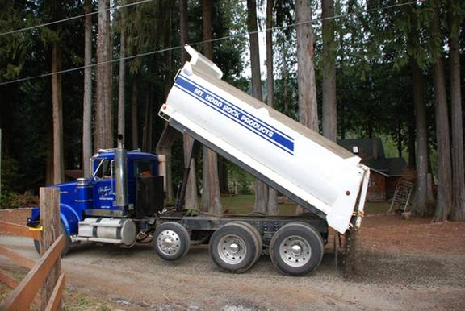
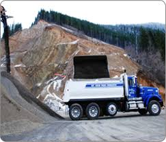

Mt.Hood Rock Services
Whether you need a delivery or want to haul yourself, Mt. Hood Rock can accommodate your crushed rock needs. Our various delivery methods include a 3 axle dump, 4 axle dump, transfer and a truck and trailer. Our deliveries per truck range from 10 cubic yards to 25 cubic yards and are subject to an additional charge. Please call for product availability and delivery pricing.
-

Road Grading and Site Preparation
Available for site preparation and road construction, our professional grader operators use two sizes of graders for various size projects from golf cart paths to highway work. Dozers and excavators are also available for all of your site preparation needs. Call (503)622-4900 for more information.
-

Road Grading and Site Preparation
Available for site preparation and road construction, our professional grader operators use two sizes of graders for various size projects from golf cart paths to highway work. Dozers and excavators are also available for all of your site preparation needs. Call (503)622-4900 for more information.